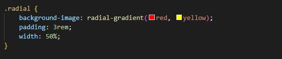
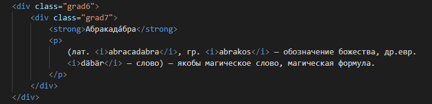

Градиенты
В CSS фон элемента может быть сплошного цвета, изображением, градиентом или их комбинацией. Когда мы говорим о градиентах в CSS, мы говорим о цветных градиентах.
Градиентом называют плавный переход от одного цвета к другому, причём самих цветов и переходов между ними может быть несколько. С помощью градиентов создаются самые причудливые эффекты веб-дизайна, например, псевдотрёхмерность, блики, фон и др. Также с градиентом некоторые элементы смотрятся более симпатично, чем однотонные.
В CSS существует два типа градиентов:
-
линейные:
цвета идут от одной точки к другой, по прямой линии; -
радиальные:
цвета идут от центра круга к его краям, во всех направлениях.
В CSS градиентные фоны рассматриваются, как фоновые изображения. Мы можем создать градиент с помощью свойства background или background-image, как обычную фоновую картинку. Значение свойства для градиента меняется в зависимости от того, какой градиент нам бы хотелось — линейный или радиальный.
Линейный градиент
Синтаксис для линейных градиентов является довольно сложным, но основная идея заключается в следующем:
- определить желаемые цвета;
- где эти цвета должны появиться вдоль оси (в начале, середине, конце и т. д.);
- в каком направлении должен идти градиент.
linear-gradient()
Функция linear-gradient() добавляет линейный градиент к фону элемента.
Она выступает значением свойства background-image или background.
Синтаксис

Значения
- <угол>
-
Задаёт угол наклона градиентной линии, который показывает направление градиента. Вначале пишется положительное или отрицательное значение угла, затем к нему слитно добавляется deg.
Нулю градусов (или 360º) соответствует градиент снизу вверх, далее отсчёт ведётся по часовой стрелке. Отсчёт угла наклона градиентной линии показан ниже.
- <цвет>
- Представляет собой значение цвета, за которым идёт необязательная позиция цвета относительно оси градиента, она задаётся в процентах от 0% до 100% или в любых других подходящих для CSS единицах.
- <позиция>
- Для записи позиции вначале пишется to, а затем добавляются ключевые слова top, bottom и left, right, а также их сочетания. Порядок слов не важен, можно написать to left top или to top left.
В табл.1 приведены разные позиции и тип получаемого градиента для цветов #fff и #000, по другому от белого к чёрному.
| Позиция | Угол | Описание | Вид |
|---|---|---|---|
| to top | 0deg | Снизу вверх. |

|
| to left | 270deg -90deg |
Справа налево. |

|
| to bottom | 180deg | Сверху вниз. |

|
| to right | 90deg -270deg |
Слева направо. |

|
| to top left | От правого нижнего угла к левому верхнему. |

|
|
| to top right | От левого нижнего угла к правому верхнему. |

|
|
| to bottom left | От правого верхнего угла к левому нижнему. |

|
|
| to bottom right | От левого верхнего угла к правому нижнему. |

|
Применение угла вместо ключевых слов даёт аналогичный результат только для горизонтальных и вертикальных градиентов.
Простой градиент из двух цветов
По умолчанию:
- направление вертикальное - сверху вниз;
- первый цвет - в начале (вверху);
- второй цвет - в конце (внизу).
Изменение направления
По умолчанию, линейный градиент движется с верхней до нижней части элемента, плавно переходя между первым и вторым значением цвета. Это направление, однако, может быть изменено с помощью ключевых слов или значения угла, заданным перед любыми значениями цвета.
Если направление сверху вниз вам не подходит, вы можете поменять его на один из вариантов:
- определить направление градиента, с помощью таких ключевых слов, как to left top;
- определить конкретный угол в градусах, вроде 45deg.
Это направление должно быть установлено перед цветом.
Для простого диагонального градиента с двумя цветами вначале пишется позиция, от которой будет начинаться градиент, затем начальный и конечный цвет.
От левого нижнего угла к правому верхнему (to top right), от черного (#000) к белому (#fff)
Если вы хотите задать конкретный угол, то можете использовать значение в градусах:
- 0deg — снизу вверх;
- 20deg — немного по диагонали, идущей по часовой стрелке;
- 90deg — подобно 15 часам, слева направо;
- 180deg — это значение по умолчанию, сверху вниз.
Из правого нижнего угла к левому верхнему - угол наклона (-45deg), от черного (#000) к белому (#fff)
Когда мы применяем диагональный градиент в не совсем квадратном элементе, градиент не переходит напрямую из одного угла в другой.
Вместо этого градиент:
- определит абсолютный центр элемента,
- поместит опорные точки в противоположных углах, откуда он должен продвигаться
- и только затем двинется в направлении угла, заданном в значении.
Для наглядности, возьмем пример выше и изменим ширину блока, но оставим значения градиента без изменений
Мы видим, что заданный угол (-45%, т.е. 45% против часовой стрелки), в действительности имеет значение, которое отличается от исходного в 45%, т.к. градиент задал ему определенные опорные точки в соответствии с шириной блока.
В тоже время, направление осталось верным заданному: из правого нижнего угла в левый верхний.
Эти углы, которые перемещает градиент, называются «волшебные уголки», так как они не являются абсолютными.
Эрик Мейер проделал замечательную работу с изложением этого синтаксиса в своей статье Linear Gradient Keywords.
Добавление большего количества цветов
Для создания сложных градиентов двух цветов уже будет недостаточно.
Синтаксис позволяет добавлять их неограниченное количество, перечисляя цвета через запятую.
Вы можете вставить столько цветов, сколько захотите. Они будут равномерно распределены вдоль оси:
- два цвета: 0% и 100%
- три цвета: 0%, 50% и 100%
- четыре цвета: 0%, 33%, 67% и 100%
Определение конкретных точек цвета
Если вы не хотите, чтобы цвет распределялся равномерно, то можете установить определённые позиции цвета, используя либо проценты (%), либо пиксели (px):
Для простоты крайние единицы вроде 0% и 100% можно не писать, они подразумеваются по умолчанию.
В данных параметрах:
- у цвета red не задана позиция цвета, так что значение по умолчанию равно 0%;
- цвет yellow ближе к верху, на 10% вместо 50%;
- цвет blue занимает половину градиента, от 50% и до конца 100%.
Прозрачный ( полупрозрачный ) градиент
При создании градиентов можно использовать прозрачный цвет (ключевое слово transparent), а также полупрозрачный с помощью формата RGBA, как показано в примере.

(лат. abracadabra, гр. abrakos — обозначение божества, др.евр. däbär — слово) — якобы магическое слово, магическая формула.
Однотонные полоски
Задавая положения цветов можно получить резкие переходы между ними, что в итоге даёт набор однотонных полосок.
Так, для двух цветов надо указать четыре значения, первые два цвета одинаковы и начинаются от 0% до 50%, оставшиеся цвета также одинаковы между собой и продолжаются от 50% до 100%.
В примере полоски добавляются в качестве фона блока. Из-за того, что крайние значения подставляются автоматически их можно не указывать, достаточно написать всего-лишь два цвета.
Теперь у нас есть набор из двух горизонтальных полосок. Добавив background-size к линейному градиенту, мы можем задать толщину полосок и заставим его повторяться по всей высоте блока.
Вертикальные полосы
Используя правило выше, мы можем масштабировать и градиентные полоски. В данном примере рассмотрим чередующиеся вертикальные градиенты.
Клеточка
Поскольку можно одновременно добавлять несколько фонов, перечисляя их параметры через запятую, то же самое допустимо проделать и с градиентами. Только один из цветов должен быть полупрозрачным, иначе градиенты будут перекрывать друг друга.
В примере для фона блока применяется два градиента, пересекающихся под прямым углом, что в сочетании с background-size создаёт клетки.
Сочетание градиента и свойства background-size позволяет получить самые разнообразные виды фоновых заливок, созданных без применения фоновых изображений.
Градиенты достаточно популярны среди веб-дизайнеров, но их добавление усложняется указанием множества цветов. Чтобы вам было проще создавать градиенты и вставлять их в код, рекомендуем генераторы градиентов ColorZilla или CSSmatic, с помощью которых легко настроить градиенты и сразу получить нужный код.
Имеются готовые шаблоны (Presets), просмотр результата (Preview), настройка цветов (Adjustments), конечный код (CSS), который к тому же поддерживает старые версии IE через фильтры.
Радиальный градиент
radial-gradient()